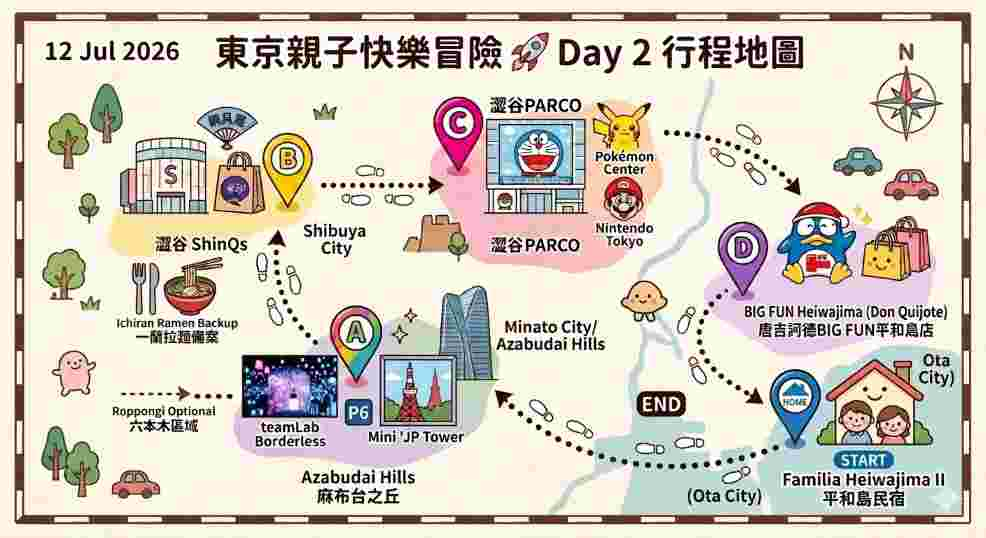

📅 2026年7月12日 (星期日)

🚗 車程估算：從 Familia Heiwajima II 出發開車約需 20-25 分鐘。
簡介：沒有地圖的無邊界光影藝術空間，讓小朋友在迷宮般的奇幻世界中自由探索、互動與玩耍。
時間：10:00 - 21:00 (最終入場 20:00)
簡介：位於森JP大廈33樓的觀景大廳，擁有挑高落地窗，能近距離欣賞震撼的東京鐵塔美景。
時間：10:00 - 21:00
📍 東京都澀谷區澀谷2-21-1 (注意：11:00 才開店)
📍 東京都渋谷区宇田川町15-1 澀谷PARCO 5F
🚶 交通指引：
🌌 觀賞榮獲金氏世界紀錄的巨型牆面光影秀。另外還可以順道逛逛熱鬧的新宿 Lumine 購物喔！
🗺️ 燈光秀位置導航 🌐 燈光秀官網 🛍️ 哆啦A夢×Lumine 參考資訊🅿️ 新宿 Lumine 推薦停車點：
停車點 1 停車點 2🏡 📍 3 Chome-20-4 Omorikita, Ota City, Tokyo 143-0016, Japan
🚗 車程估算：從新宿開車返回民宿約需 30-40 分鐘。